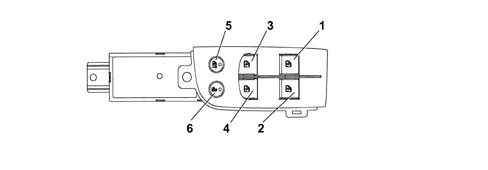

DRIVER'S CONTROL PANEL
- Path
- Descriptions > 70 FITTINGS > 7005 PASSENGER COMPARTMENT FRONT SIDE DOORS > DRIVER'S CONTROL PANEL
- Kind
- system description
- Applies to
- all engines; all production periods
- Interactive page
- https://sloeber94.github.io/elrnDB-lThss/en/#/841005774
Applies to: all engines; all production periods
COMPOSITION

- 1 - Left front electric window up/down button
- 2 - Right front electric window up/down button
- 3 - Left rear electric window up/down button
- 4 - Right rear electric window up/down button
- 5 - Rear door windows inhibitor button
- 6 - Rear door child safety button
OPERATION
The electric windows in the front and rear driver and passenger side doors can be operated manually, automatically or using a remote control.
Manual system
The starting and stopping is carried out manually using the control buttons. When the latter are released, the window stops.
Automatic system
The automatic mode involves starting the movements through an impulse, lasting longer than a preset time, on the control button.
The windows are stopped by:
- reaching the upper/lower end of travel position;
- safety systems (safety sensors)
- after having pressed the raising or lowering control (only with the ignition switched ON).
Remote system
Using the remote control it is possible to open/close the windows in the doors by keeping the door lock/unlock button pressed for more than 3 seconds; when it is released the opening/closing is interrupted.
There are also two other buttons in the driver's front door control panel:
- rear door electric windows inhibitor button;
- control button for switching the rear door child safety device on/off.